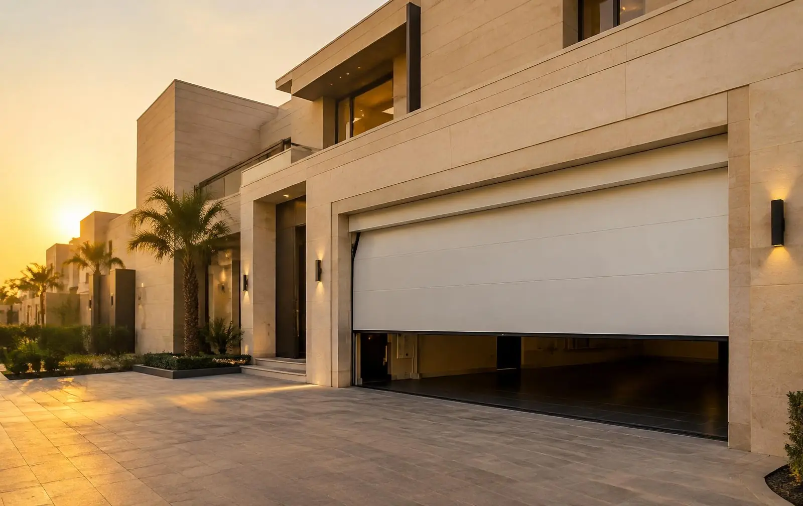
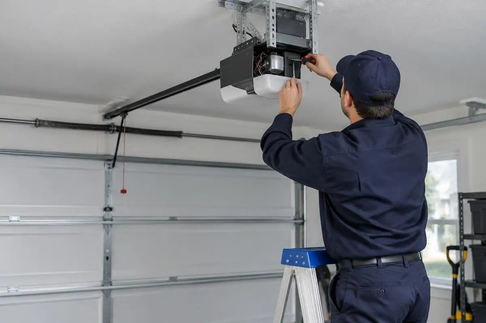

صيانة وتصليح أبواب الكراجات الكهربائية
إصلاح أبواب الكراج المقطعية والقلابة والرول في الفلل والعمائر: ضبط الزنبرك والكيابل والمجاري، وإعادة برمجة الموتور والريموت.
صيانة أبواب الكراج
فني أبواب كراج بالرياض يصل إلى موقعك لتشخيص العطل وإصلاحه: من الدينمو ولوحة التحكم والريموت، إلى تركيب أبواب الرول للمحلات والأبواب السحاب والمفصلية للفلل، مع توفير قطع الغيار الأصلية.
نعمل على الأبواب الكهربائية بكل أنواعها: أبواب الكراج في البيوت، وأبواب الرول والشتر في المحلات، والأبواب السحاب والمفصلية في الفلل والاستراحات، والأبواب الصناعية في المصانع والمستودعات والمحطات.
إصلاح أبواب الكراج المقطعية والقلابة والرول في الفلل والعمائر: ضبط الزنبرك والكيابل والمجاري، وإعادة برمجة الموتور والريموت.
صيانة أبواب الكراجتركيب أبواب رول جديدة بمقاسات الفتحة، وصيانة الشرائح والموتور الأنبوبي والمحوري للمحلات والمخازن.
أبواب الرولإصلاح الشتر العالق أو المائل وتغيير الشرائح التالفة، وتحويل الشتر اليدوي إلى كهربائي.
صيانة أبواب المحلاتصيانة الأبواب الصناعية الثقيلة في المصانع والمستودعات ومحطات الوقود ومراكز الخدمة.
الأبواب الصناعيةتركيب محرك باب سحاب مع الكريمالير والحساسات، وإصلاح السكة والعجلات وضبط حدود الحركة.
الأبواب السحابتركيب ذراع باب مفصلي بضلفة واحدة أو ضلفتين، وصيانة الأذرعة التي تتوقف أو تفتح ضلفة دون الأخرى.
الأبواب المفصليةفحص ماكينة سحب الأبواب وتغيير التروس والمكثف والمفاتيح الداخلية قبل اللجوء إلى الاستبدال.
إصلاح الدينموإصلاح المحركات العلوية والجانبية والأنبوبية ومحركات الأبواب السحاب والصناعية.
إصلاح المحركاتإصلاح كروت التحكم وبرمجة الريموتات ونسخها، وضبط حساسات الأمان (الفوتوسل) لحماية الأطفال والسيارات.
لوحات التحكم والريموتمحركات وكروت وريموتات وزنبركات وكيابل وبكرات أصلية متوافقة مع نوع بابك ومحركه.
قطع الغيارالباب الأوتوماتيكي منظومة متكاملة: محرك، ولوحة تحكم، وريموت، وحساسات أمان، وأجزاء ميكانيكية تتحمل وزن الباب كل يوم. لذلك نبدأ بفحص المنظومة كاملة لمعرفة سبب العطل الحقيقي، بدلاً من تغيير قطعة سليمة.
نوضح لك ما يحتاجه الباب وما يمكن تأجيله، ونستخدم قطع غيار أصلية متوافقة مع المحرك، ثم نختبر الباب أمامك فتحاً وإغلاقاً قبل المغادرة.

خطوات بسيطة وواضحة من أول تواصل حتى عودة الباب للعمل.
اتصل أو أرسل واتساب مع صورة أو مقطع قصير للباب ووصف العطل.
نفحص المحرك واللوحة والحساسات والأجزاء الميكانيكية في موقعك.
نشرح لك سبب العطل والقطع اللازمة قبل البدء بأي عمل.
ننفذ الإصلاح ونختبر الفتح والإغلاق وحساسات الأمان والريموت.
أبواب كراج مقطعية، وأبواب رول للمحلات، وأبواب سحاب ومفصلية، وأبواب صناعية، إلى جانب المحركات ولوحات التحكم وقطع الغيار.
القطعة غير المتوافقة قد تُشغّل الباب أياماً ثم تعيد العطل أو تُتلف المحرك. لهذا نختار القطعة بناءً على نوع الباب ووزنه وطراز المحرك ولوحة التحكم، ونركّبها ونضبطها في موقعك.
محركات علوية (سقفية) وجانبية بقدرات تناسب وزن الباب ومقاسه.
محركات أرضية للأبواب السحاب مع الكريمالير المسنن وقواعد التثبيت.
دينمو السحب وعلب التروس والمكثفات ومفاتيح نهاية الحركة.
لأبواب الرول المنزلية والتجارية وأبواب الشتر الكهربائية.
كروت تشغيل بديلة ومتوافقة مع المحرك مع أجهزة الاستقبال.
ريموتات أصلية وبرمجة ونسخ ريموت إضافي لنفس الباب.
حساسات الفوتوسل التي توقف الباب عند وجود عائق في طريقه.
زنبركات الموازنة والكيابل والبكرات والمجاري لأبواب الكراج المقطعية.
أذرعة خطية وأذرعة مفصلية للضلفة الواحدة والضلفتين.
نصل إلى المنازل والمحلات والمصانع في مختلف أنحاء مدينة الرياض. إذا لم تجد حيّك في القائمة فتواصل معنا، فالقائمة تضم أمثلة من الأحياء التي نخدمها وليست حصراً لها.
نعم، نقدم صيانة وتصليح أبواب الكراج بالرياض في شمالها وجنوبها وشرقها وغربها ووسطها، ومن الأحياء التي نخدمها الملقا والنرجس والياسمين والصحافة والعارض والنخيل وقرطبة والسلي والعزيزية. تواصل معنا بالاتصال أو واتساب لتحديد موعد الزيارة.
من أكثر الأعطال شيوعاً: عدم استجابة الباب للريموت، وتوقفه في منتصف الحركة، وارتفاع صوته أثناء الفتح، وانقطاع الزنبرك أو الكيبل، وخروج الباب عن المجرى، إضافة إلى أعطال الدينمو ولوحة التحكم والحساسات.
في حالات كثيرة يمكن إصلاح دينمو باب الكراج بتغيير التروس أو المكثف أو مفاتيح نهاية الحركة. بعد الفحص نوضح لك هل الإصلاح مجدٍ أم أن الاستبدال هو الخيار الأنسب، قبل البدء بأي عمل.
نعم، نوفر قطع غيار أصلية متوافقة مع نوع الباب والمحرك، مثل المحركات ولوحات التحكم والريموتات والحساسات والزنبركات والكيابل والبكرات وأذرعة الأبواب المفصلية.
اتصل على الرقم 0531421435 أو أرسل رسالة واتساب، ويُفضَّل إرسال صورة أو مقطع قصير للباب ووصف للعطل، حتى نجهز القطع المناسبة قبل الزيارة.
اتصل أو أرسل واتساب وصف العطل، وسنرتب معك موعد الزيارة.